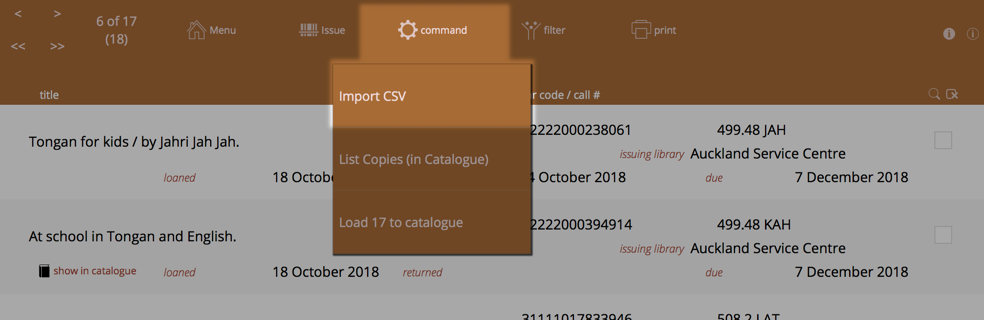

External Library Loans
You can import "loan" data from external libraries, such as the National Library. These are the items a library might receive for an extended period of time and you want to include in your catalogue for issuing and returning, but that you wish to keep track so that you can return them to the external library.
This documentation assumes the National Library of New Zealand is the source of the data.
The facility allows you to import a simple file, such as a .csv file that contains a list of your loaned items. This .csv file should contain the title, bar code, date issued, date due as a minimum. Additional information such as the full title data is a bonus.
Check
we are receiving the occasional report that the "csv" files received from the National Library of New Zealand sometimes are formatted differently and may contain more than just your current issues. We are seeking details on this, so please contact us when you receive your National Library data.
Overview of the process
The process is reasonably simple:
- import a .csv file into the external library table
- process the imported data and add to the catalogue, allocating them to a library
- edit the loaded data, adding other information as you see fit (library location, a replacement cost, subjects, etc.)
- use the items as you would any other item
- you can find items that are due or overdue to be returned to the issuing library using standard find commands (if the items have a due date)
- to mark the items as "returned", simply archive them in the catalogue in the normal way
Loading external library loans
Access the external loan listing from navigation->external_library.
The list is coloured similarly to the "copies" list because the items received are copies. However, anything listed here are not necessarily loaded into the catalogue.
Note
you will normally not delete items from this listing as this list serves a permanent record of external library transactions
Import the supplied file
Import your CSV file from National library. This contains basic information about the items, such as Title, loan date, due date, issuing library and bar code.

Select the import file when prompted and then the "Import Map" is displayed. This determines how the columns of data in the import file "map" to the fields in the external_library table.
You may need to move the field names on the right up or down to match the data on the left.
Note the double headed arrow between the "bar code" fields. You should turn this on, if it's not.
Click the line between the fields to change the indicator from an arrow (import), double-arrow (import with match) or line (for don't import). This tells Athenaeum to marry up bar codes, or create new entries.
Important fields
- bar_code
- The bar code field is used to match up initial entries in the catalogue. Bar codes must be unique in the catalogue, you may not have duplicate bar codes in the catalogue.
- returned
- This is the date that you mark an item as returned to the external library. This is set when you archive the item from the catalogue.
- due
- This is your due date for returning the item to the external library. If an item has not been returned (there is no date) and the due date is past due, then the date is shown in red text with a yellow background.
- show in catalogue (button)
- This is not a field, per se, but rather a button that will show you the item in the Copies list. It is only visible when the bar code matches a bar code in the copies list.
- title/author
- The External library function assumes that a single field contains both Title and Author information separated by a "/" character.
Load into the catalogue
When you have imported the supplied data satisfactorily, load items into the catalogue using the "Load into catalogue" function.
Note
Load into catalogue will automatically ignore items that have matching bar codes and have been "returned"_
Selecting the destination library
If you have yet to define additional libraries, then you will be prompted at this point to stop and create one (you probably should do this, doing so will allow you to separately report items from different libraries.).
If you have only defined one library, then you are also prompted at this point to create an additional library - again, you should probably do this for the same reason.
If you have defined multiple libraries, you are prompted to choose which library the external items will be assigned to:
After the load
If any items were skipped (because the bar codes were already in the catalogue OR the date returned field is not empty), you are advised which bar codes were skipped.
Then, you are taken to the catalogue list and your found set is the set of items that were just added:
You can now edit the titles as you see fit.
Edit the loaded items
After loading, you may wish to set:
-
the privilege when issuing to borrowers
-
subjects, other notes, etc.
-
check the subscription expiry date - which is set to the "due date" field from the import
-
the location of the item (set in the copy detail)
-
a replacement cost (set in the copy detail)
Note
you can also jump to the Copies list and the found set of copies is also the imported items. Here you have easier access to location, replacement cost - you can use the Replace function to set them in one step.
Removing external loans from Catalogue
Entries for external loans are removed from the catalogue with the various archive utilities.
Use the standard find feature to find the external loans you wish to remove from the catalogue.
You can either Archive the items individually or bulk archive a found set of items.
When archiving external loans, Athenaeum will see that there is a linkage to the External loans table and set the "return date" as the archive date, before sending the items to the archive.